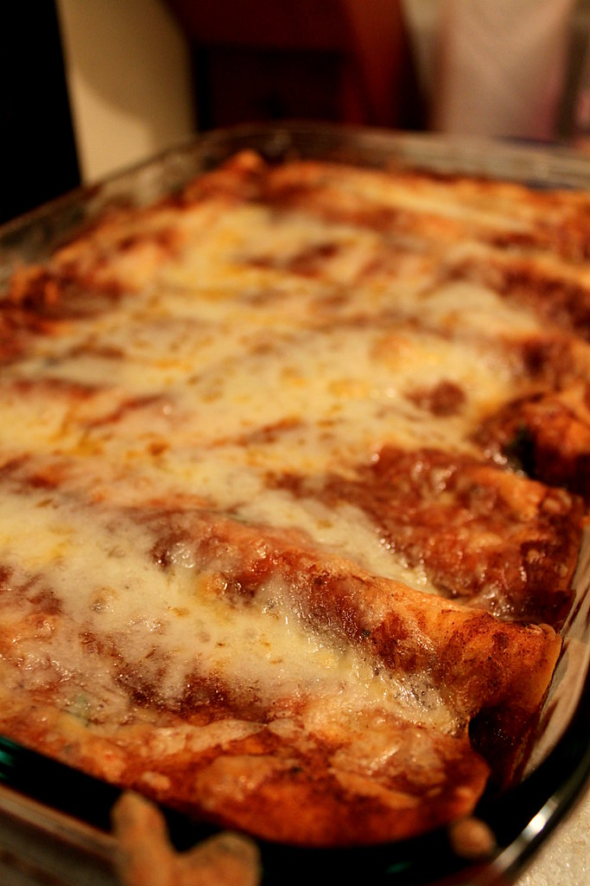

Lasagna

Description
Dies ist eine leckere Lasagne mit nicht Lasagneplatten sondern mit
Enchiladas.
Geht natürlich auch mit Lasagneplatten.
Und geht auch mit anderen Zutaten. Aber ich habe halt diese benutzt.
Ingredients
- 350 g Hackfleisch, gemischt
- 1 Zwiebel(n), rot
- 2 Knoblauchzehe(n)
- 1 Paprikaschote(n)
- 1 Dose Kidneybohnen, 400 g
- 1 Dose Mais, 300 g
- 1 Dose Tomaten, stückige, 400 g
- 300 g Naturjoghurt
- 150 g Frischkäse mit Paprika
- Paprikapulver, edelsüß
- Paprikapulver, rosenscharf
- Salz und Pfeffer
- Tabasco
- Chilipulver
- 1 Pck. Tortilla(s) Wraps, Durchmesser 20 cm
- 1 Pck. Käse, gerieben, 200 g
- Öl, zum Anbraten
Steps
-
Zwiebel und Knoblauch fein hacken und in etwas Öl kurz anbraten.
Hackfleisch hinzufügen, gut anbraten. Mais und Kidneybohnen abtropfen
lassen. Klein gehackte Paprika, den Mais und die Kidneybohnen zugeben
und kurz mitbraten. Die gehackten Tomaten, den Joghurt und den
Frischkäse zufügen, gut verrühren und aufkochen. Ca. 10 - 15 Min.
köcheln lassen. Abschmecken, nach Wunsch mit Salz, Pfeffer, Chili und
Tabasco nachwürzen.
-
In der Zwischenzeit eine Auflaufform einfetten. Dann beginnen mit etwas
Soße, 2 Tortillas nebeneinander legen (liegen ein bisschen übereinander,
je nach Auflaufformgröße), Soße, Tortillas, mit Soße enden. Den
geriebenen Käse darüberstreuen und im vorgeheizten Backofen bei 175°C
ca. 20 Min. überbacken, je nach Wunsch, wie braun der Käse werden soll.
-
Sehr einfaches und schnelles Rezept, das sich auch hervorragend für
Gäste vorbereiten lässt. Dazu passen Baguette und Salat.